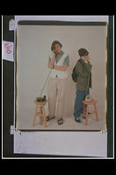
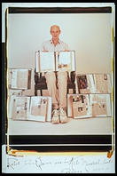

40 Ways to Fight AIDS
By Elsa Dorfman.
 1. Know the Facts |
2. Dispell The Myths |
3. Talk About It |
4. Be A Buddy |
5. Be A Group Educator |
6. Practice Safer Sex |
7. Be A Condom Dispenser |
8. Help Provide Meals |
9. Walk The Walk |
10. Bring A Friend |
11. Write A Check. |
12. Wear A Care Pin |
13. Wear A Red Ribbon |
14. Make A Quilt |
15. Answer A Hotline |
16. Apply your skills. |
 17. Work A Fundraiser |
18. ACT UP |
19. Write a Letter |
20. Explore The Art Of Giving |
21. Hold A Baby Affected By HIV |
 22. Consider Being Tested |
23. Don't Be Judgmental. |
24. Help People With AIDS Find Housing |
25. Help A Person With AIDS Keep House |
26. Talk With Your Lover |
27. Help Establish A Fair HIV/AIDS Work Policy |
28. Care |
29. Care |
30. Make Yourself Handy |
31. Be A Mover |
32. Be A Shaker |
|  33. Be A Protector |
34. Make A Holiday Happy |
35. Have A Fun Raiser |
36. Express Yourself |
 37. Share These Pages |
38. Say A Prayer |
39. Show Hope |
 40. Think About It. EVERY DAY. |
Designed by Philip Greenspun and Jin Choi, PhotoCD scans by Boston Photo